import numpy.random as npr
def flatten(x):
"""Flatten all but the first dimension of an ndarray."""
return np.reshape(x, (x.shape[0], -1))
def one_hot(x, k, dtype=np.float32):
"""Create a one-hot encoding of x of size k."""
return np.array(x[:, None] == np.arange(k), dtype)
rng = npr.RandomState(0)
n = x.shape[0]
perm = rng.permutation(n)
traini = perm[0:8000]
testi = perm[8000:n]
train_images = flatten(x[traini,:,:])/ np.float32(255.)
test_images = flatten(x[testi,:,:])/ np.float32(255.)
train_labels = one_hot(y[traini],10)
test_labels = one_hot(y[testi],10)23 Convolutional Neural Networks
The problem of pattern recognition in images is a very broad one. It encompasses tasks such as image classification, object detection, semantic segmentation, instance segmentation, image captioning, and image generation. In this chapter, we will focus on the first two tasks, which are the most common ones. We start by demonstrating how to classify images with a fully-connected neural network. Then, we will show how to use convolutional neural networks (CNNs) to improve classification accuracy. Finally, we will show how to detect objects in images by using a pre-trained model. The problem of image classification is the problem of mapping an image to a class label. In this chapter, we will use the MNIST dataset, which contains images of handwritten digits. The goal is to classify each image into one of the 10 possible classes (0-9).
We will use the jax library to implement the neural networks. jax is a library for numerical computing that is similar to numpy, but it is designed to work with accelerators like GPUs and TPUs. It also supports automatic differentiation, which is very useful for training neural networks. The two main computational tools required to train a neural network model are automatic differentiation and linear algebra operations, mainly matrix multiplication. jax provides both of these tools. It also provides a jit function that can be used to compile a function to run on accelerators. This can significantly speed up the computation. The matrix operation in jax is implemented in the dot function.
Image data is represented as a matrix of pixel values. For example, a grayscale image of size 28x28 pixels can be represented as a matrix of shape (28, 28). A color image of size 28x28 pixels can be represented as a three-dimensional array of shape (28, 28, 3), where the last dimension represents the red, green, and blue channels. In this chapter, we will use grayscale images, so we will represent each image as a matrix.
In this chapter, we will consider the MNIST dataset, which contains images of handwritten digits. Each image is a grayscale image of size 28×28 pixels. The original dataset contains 60,000 training images and 10,000 test images. For simplicity, we will use only the test dataset. Each image is labeled with the digit it represents. The goal is to classify each image into one of the 10 possible classes (0-9).
import gzip
import struct
import array
import numpy as np
import matplotlib.pyplot as plt
def parse_labels(filename):
with gzip.open(filename, "rb") as fh:
_ = struct.unpack(">II", fh.read(8))
return np.array(array.array("B", fh.read()), dtype=np.uint8)
def parse_images(filename):
with gzip.open(filename, "rb") as fh:
_, num_data, rows, cols = struct.unpack(">IIII", fh.read(16))
return np.array(array.array("B", fh.read()),dtype=np.uint8).reshape(num_data, rows, cols)
x = parse_images("../data/t10k-images-idx3-ubyte.gz")
y = parse_labels("../data/t10k-labels-idx1-ubyte.gz")
plt.imshow(x[0,:,:], cmap='gray'); plt.title(f'Label: {y[0]}'); plt.show()
plt.imshow(x[1,:,:], cmap='gray'); plt.title(f'Label: {y[1]}'); plt.show()
plt.imshow(x[2,:,:], cmap='gray'); plt.title(f'Label: {y[2]}'); plt.show()
plt.imshow(x[3,:,:], cmap='gray'); plt.title(f'Label: {y[3]}'); plt.show()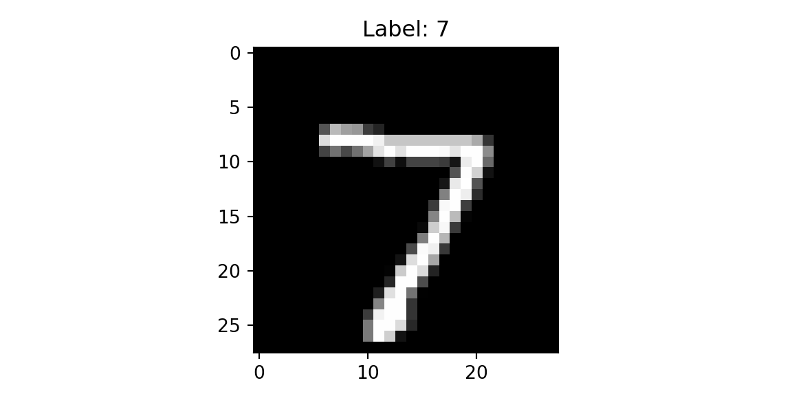
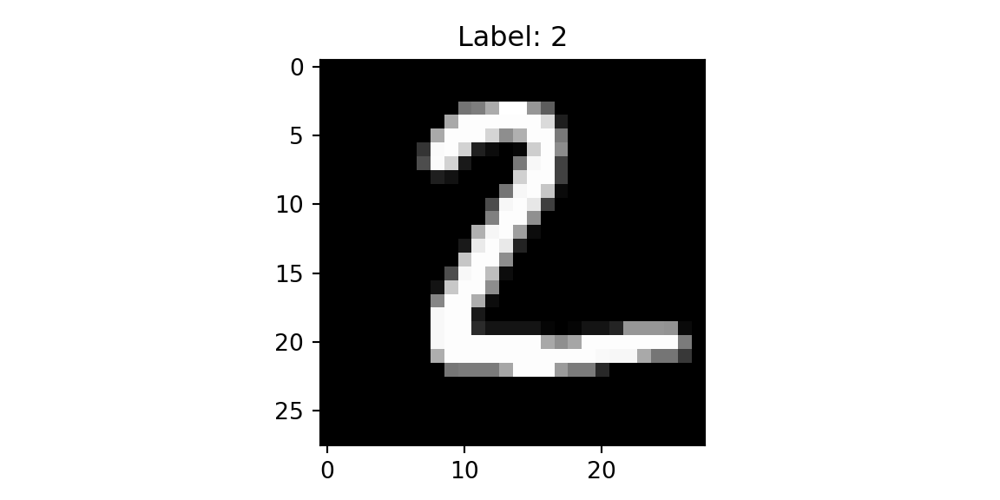
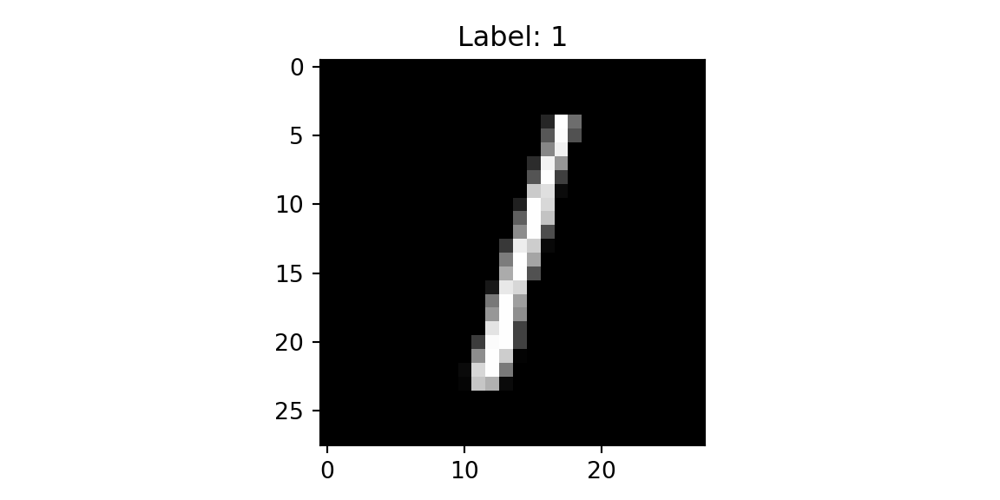
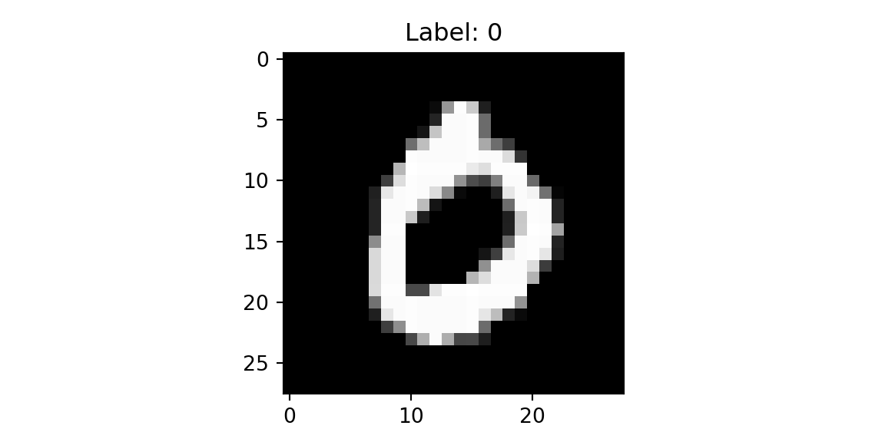
The dataset contains images and corresponding labels with the digit it represents. The goal is to classify each image into one of the 10 possible classes (0-9). The straightforward approach is to build a classification model using a fully connected neural network. The input to the model is a 28×28 matrix, which is reshaped into a vector of size 784. The output of the model is a vector of size 10, which represents the probability of each class. First, we split the set of 10,000 images and use 80% for training and 20% for validation. We shuffle the data before splitting to avoid any bias in the train/test datasets. Let’s load and prepare the data
The model is trained by minimizing the cross-entropy loss and we use accuracy to evaluate the model.
def loss(params, batch):
inputs, targets = batch
preds = predict(params, inputs)
return -jnp.mean(jnp.sum(preds * targets, axis=1))
def accuracy(params, batch):
inputs, targets = batch
target_class = jnp.argmax(targets, axis=1)
predicted_class = jnp.argmax(predict(params, inputs), axis=1)
return jnp.mean(predicted_class == target_class)Finally, we implement the feed-forward network with \(\tanh\) activation. The last layer is a linear layer with the \(z_i - \ln \left(\sum_j e^{z_j}\right)\) function applied component-wise. Thus, our predict function simply returns the logarithm of the probability of each class. Typically we would use the softmax function to compute the probability of each class. Given a vector of logits \(z\), the softmax function is defined as follows: \[
\sigma(z)_i = \frac{e^{z_i}}{\sum_{j=1}^{K}e^{z_j}}
\] However, the softmax function is numerically unstable when the input values are large. If we take the logarithm of the softmax function, we get the following expression: \[
\ln\sigma(z)_i = z_i - \ln\sum_{j=1}^{K}e^{z_j}
\] This is exactly what we need to compute the cross-entropy loss.
def predict(params, inputs):
activations = inputs
for w, b in params[:-1]:
outputs = jnp.dot(activations, w) + b
activations = jnp.tanh(outputs)
final_w, final_b = params[-1]
logits = jnp.dot(activations, final_w) + final_b
return logits - logsumexp(logits, axis=1, keepdims=True)Now we are ready to implement the SGD loop to train the model.
from jax import jit, grad
import jax.numpy as jnp
from jax.scipy.special import logsumexp
layer_sizes = [784, 1024, 1024, 10]
param_scale = 0.1
step_size = 0.001
num_epochs = 10
batch_size = 128
num_train = train_images.shape[0]
num_complete_batches, leftover = divmod(num_train, batch_size)
num_batches = num_complete_batches + bool(leftover)
def init_random_params(scale, layer_sizes, rng=npr.RandomState(0)):
return [(scale * rng.randn(m, n), scale * rng.randn(n))
for m, n, in zip(layer_sizes[:-1], layer_sizes[1:])]
def data_stream():
while True:
perm = rng.permutation(num_train)
for i in range(num_batches):
batch_idx = perm[i * batch_size:(i + 1) * batch_size]
yield train_images[batch_idx], train_labels[batch_idx]
batches = data_stream()
@jit
def update(params, batch):
grads = grad(loss)(params, batch)
return [(w - step_size * dw, b - step_size * db) for (w, b), (dw, db) in zip(params, grads)]
params = init_random_params(param_scale, layer_sizes)
log = np.empty((2,num_epochs))
for epoch in range(num_epochs):
for _ in range(num_batches):
params = update(params, next(batches))
train_acc = accuracy(params, (train_images, train_labels))
test_acc = accuracy(params, (test_images, test_labels))
log[:,epoch] = [train_acc,test_acc,]
print(f"Training set accuracy {train_acc}")Training set accuracy 0.8043750524520874print(f"Test set accuracy {test_acc}")Test set accuracy 0.7725000381469727
plt.plot(range(num_epochs),log[0,:]);
plt.plot(range(num_epochs),log[1,:]);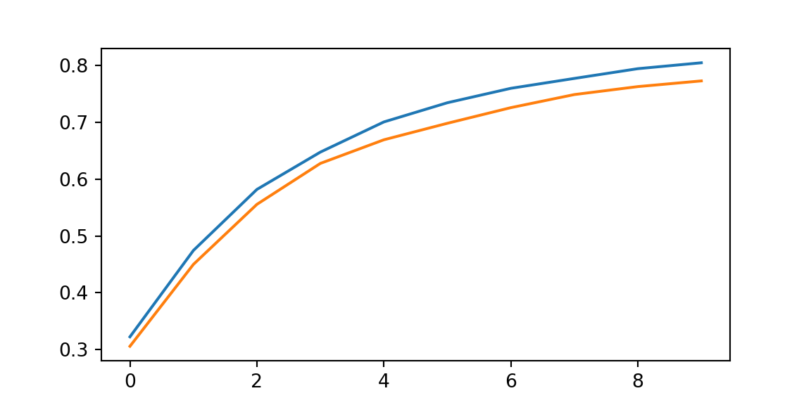
23.1 Convolutions
Using a fully connected neural network to classify images has some limitations. The main limitation is that it does not take into account the spatial structure of the image and treats each pixel independently. As a result, it does not perform well on real-life images and has a large number of parameters. Images have a spatial structure, and this spatial structure contains important information that can be used to improve classification accuracy. For example, it is not unusual to find that the same element can appear in different parts of the image, such as a background with a solid color or a specific texture, such as grass or sky.
Applying a filter to an image is a way to extract features from the image. A filter is a small matrix that is used to extract features from the image. The filter is applied to the image by sliding it over the image and computing the dot product at each position. The result is a new image that contains the features extracted by the filter. The filter is also called a kernel. The size of the filter is called the kernel size. The kernel size is usually an odd number, such as 3×3 or 5×5. The kernel size determines the receptive field of the filter. The receptive field is the region of the input image that is used to compute the output. The stride is the number of pixels by which the filter is shifted at each step, and it determines the size of the output image. The process of convolving a filter with an image is called a convolution operation and it is similar to the approach used by kernel smoothing in statistics.
Let us look at a one-dimensional example. Suppose we have a one-dimensional input signal \(x\) and a one-dimensional filter \(w\). The convolution of \(x\) and \(w\) is defined as follows: \[ (x \ast w)(t) = \sum_{i=0}^{h}x(t+i)w(i), \] where \(h\) is the size of the filter. The convolution operation is used to filter the input signal.
import matplotlib.pyplot as plt
from jax import random
import jax.numpy as jnp
import numpy as np
key = random.PRNGKey(1701)
x = jnp.linspace(0, 10, 500)
y = jnp.sin(x) + 0.2 * random.normal(key, shape=(500,))
window = jnp.ones(10) / 10
y_smooth = jnp.convolve(y, window, mode='same')
plt.plot(x, y, 'lightgray')[<matplotlib.lines.Line2D object at 0x166dae4b0>]plt.plot(x, y_smooth, 'black');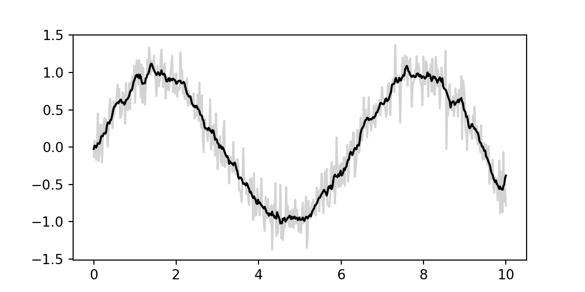
We will demonstrate the concept using a simple example, where we have a 5×5 image and a 3×3 filter. We need to classify each image into one of the three classes: cross, diagonal, and right-diagonal.
The filter is applied to the image by sliding it over the image and computing the dot product at each position. The result is a new image that contains the features extracted by the filter. The filter is also called a kernel. The size of the filter is called the kernel size. The kernel size is usually an odd number, such as 3x3 or 5x5. The kernel size determines the receptive field of the filter. The receptive field is the region of the input image that is used to compute the output. The stride is the number of pixels by which the filter is shifted at each step. The stride determines the size of the output image. The process of convolving a filter with an image is called a convolution operation.
img = np.genfromtxt("../data/img-x.tsv", delimiter="\t")
imgx = img[0:5,:]
imgd = img[5:10,:]
imgrd = img[10:15,:]
plt.imshow(imgx, cmap='binary'); plt.title(f'Cross'); plt.show();
plt.imshow(imgd, cmap='binary'); plt.title(f'Diagonal'); plt.show();
plt.imshow(imgrd, cmap='binary'); plt.title(f'Right-Diagonal'); plt.show();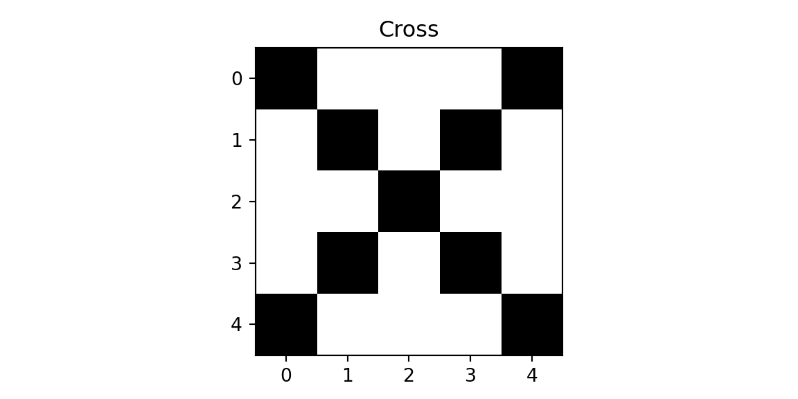
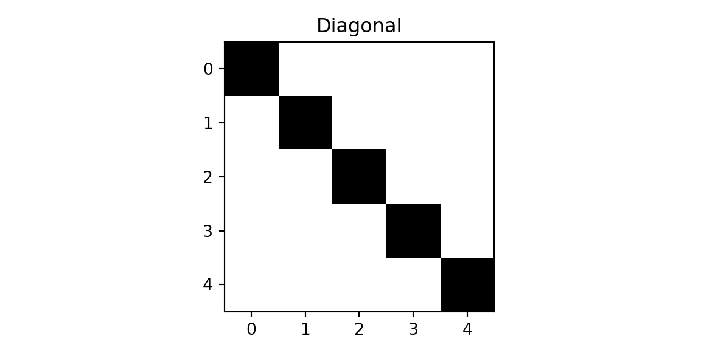
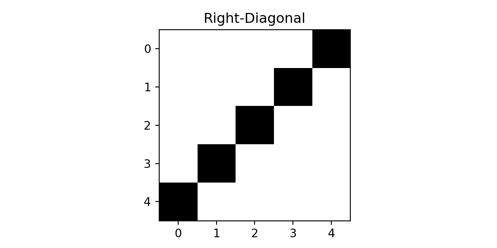
We will use two filters.
f = np.genfromtxt("../data/img-filter.tsv", delimiter="\t")
f1 = f[0:3,:]
f2 = f[3:6,:]
plt.imshow(f1, cmap='binary'); plt.title(f'Filter 1'); plt.show();
plt.imshow(f2, cmap='binary'); plt.title(f'Filter 2'); plt.show();
print(f1)
print(f2)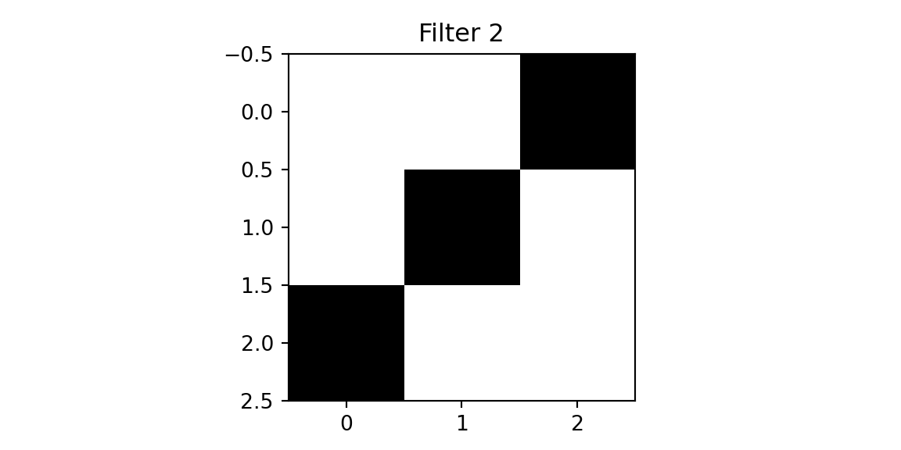
[[1. 0. 0.]
[0. 1. 0.]
[0. 0. 1.]][[0. 0. 1.]
[0. 1. 0.]
[1. 0. 0.]]The first filter is designed to detect a diagonal line from the top left to the bottom right. The second filter is designed to detect a diagonal line from the top right to the bottom left. We will apply the filters to the cross image and the diagonal image.
def conv(img, f):
out = np.zeros((3,3))
for i in range(3):
for j in range(3):
out[i,j] = np.sum(img[i:i+3,j:j+3]*f)
return out
def maxpool(img):
return np.max(img)
def fc(x, w, b):
return jnp.dot(w,x) + b
def softmax(x):
return jnp.exp(x) / jnp.sum(jnp.exp(x))
def cnn(img, f1, f2):
out1 = conv(img,f1)
out2 = conv(img,f2)
x = np.array([maxpool(out1), maxpool(out2)])
w = np.array([[1,0],[0,1],[0.6,0.6]])
b = 0
z = fc(x,w,b)
return softmax(z),out1,out2
zx, outx1, outx2 = cnn(imgx,f1,f2)
plt.imshow(outx1, cmap='binary'); plt.title(f'Output 1'); plt.show();
plt.imshow(outx2, cmap='binary'); plt.title(f'Output 2'); plt.show();
print(outx1); print(outx2)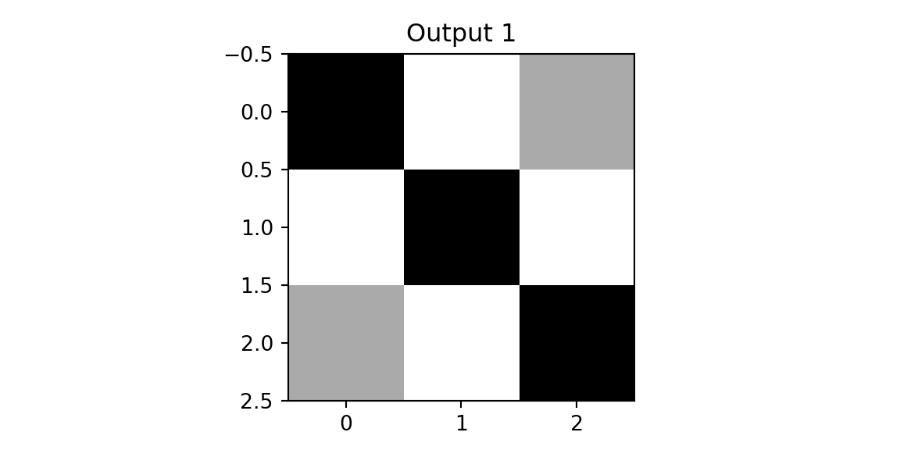
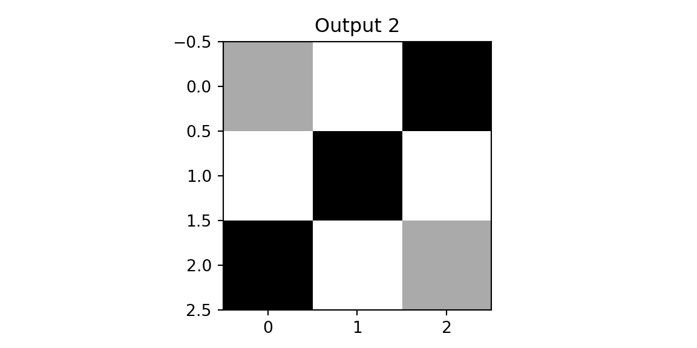
[[3. 0. 1.]
[0. 3. 0.]
[1. 0. 3.]]
[[1. 0. 3.]
[0. 3. 0.]
[3. 0. 1.]]We see that both outputs have pixels with high values. However, when we apply the same two filters to the diagonal image, we get different results.
zd, outd1, outd2 = cnn(imgd,f1,f2)
plt.imshow(outd1, vmin=0,vmax=3,cmap='binary'); plt.title(f'Output 1'); plt.show();
plt.imshow(outd2, vmin=0,vmax=3, cmap='binary'); plt.title(f'Output 2'); plt.show();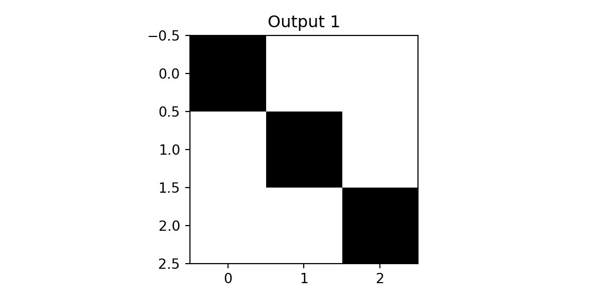
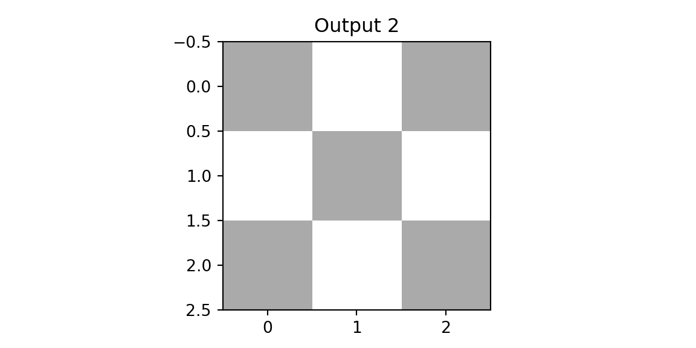
The result of applying the second filter to the diagonal image is a matrix close to zero. This is because the filter is designed to detect a diagonal line from the top right to the bottom left, and the diagonal image does not contain such a line. We use this observation to design the next layer of our network, which is a pooling layer. The simplest one is the max-pool that simply returns the pixel with the highest value in the receptive field. Finally, we concatenate the outputs of the pooling layer and apply a fully connected layer to classify the image. Let us compare the predictions for the three images.
zrd, outrd1, outrd2 = cnn(imgrd,f1,f2)
print(f'Cross: {zx}')Cross: [0.26163495 0.26163495 0.47673005]print(f'Diagonal: {zd}')Diagonal: [0.5937724 0.08035836 0.32586923]print(f'Right-Diagonal: {zrd}')Right-Diagonal: [0.08035836 0.5937724 0.32586923]The model correctly predicted all three classes.
Now we return to the MNIST example and use higher-level functions to implement the convolutional neural network.
import torch
import torch.nn as nn
from torch.nn import functional as F
x = parse_images("../data/t10k-images-idx3-ubyte.gz")
y = parse_labels("../data/t10k-labels-idx1-ubyte.gz")
class Net(nn.Module):
def __init__(self):
super(Net, self).__init__()
self.conv1 = nn.Conv2d(1, 32, 3, 1)
self.conv2 = nn.Conv2d(32, 64, 3, 1)
self.fc1 = nn.Linear(9216, 128)
self.fc2 = nn.Linear(128, 10)
def forward(self, x):
x = self.conv1(x)
x = F.relu(x)
x = self.conv2(x)
x = F.relu(x)
x = F.max_pool2d(x, 2)
x = torch.flatten(x, 1)
x = self.fc1(x)
x = F.relu(x)
x = self.fc2(x)
output = F.log_softmax(x, dim=1)
return output
def data_stream():
perm = rng.permutation(num_train)
while True:
for i in range(num_batches):
batch_idx = perm[i * batch_size:(i + 1) * batch_size]
yield torch.from_numpy(x[batch_idx,:,:]/ np.float32(255.))[:, None, :, :], torch.from_numpy(y[batch_idx])
def train(model, optimizer):
model.train()
batches = data_stream()
for epoch in range(num_epochs):
for _ in range(num_batches):
optimizer.zero_grad()
data, target = next(batches)
output = model(data)
loss = F.nll_loss(output, target)
loss.backward()
optimizer.step()
print(f"Epoch {epoch}: Loss {loss.item()}")
model = Net()
optimizer = torch.optim.Adadelta(model.parameters(), lr=0.1)
train(model, optimizer)Epoch 0: Loss 0.7312407493591309
Epoch 1: Loss 0.4650997221469879
Epoch 2: Loss 0.3482094705104828
Epoch 3: Loss 0.27077701687812805
Epoch 4: Loss 0.20918704569339752
Epoch 5: Loss 0.15953704714775085
Epoch 6: Loss 0.12472135573625565
Epoch 7: Loss 0.09748729318380356
Epoch 8: Loss 0.07848699390888214
Epoch 9: Loss 0.0626567155122757